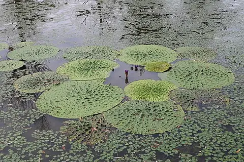

Wild nut · Aug–Oct
Makhana
Euryale ferox
Also called Makhana, Fox nut, Gorgon nut
Makhana is a wild nut you can forage from August to October in East and Northeast. Spiny giant water lily of Mithila's ponds. Seeds are gathered from pond beds.

Caution. Harvesting means diving in muddy ponds. It's skilled work, so buy from local harvesters.
When is makhana in season in India?
Makhana is usually in season August to October. Timing shifts with weather, latitude and altitude.
Where does makhana grow in India?
Makhana grows in Arunachal Pradesh, Assam, Bihar, Jharkhand, Manipur, Meghalaya, Mizoram, Nagaland, Odisha, Sikkim, Tripura, West Bengal. Regions: East, Northeast.
How do you recognise makhana?
Spiny giant water lily of Mithila's ponds. Seeds are gathered from pond beds.
How do you harvest makhana?
Harvesting means diving into muddy ponds, so it's skilled work. Buy from local harvesters.
How do you eat makhana?
Popped and roasted, kheer, curry.
How do you store makhana?
Popped makhana keeps months airtight.
What is makhana good for?
Protein, Calories.
What can you cook with makhana?
- Roasted makhana: Fox nuts tossed in ghee with salt, pepper and chaat masala until crunchy.
- Makhana kheer: Roasted fox nuts simmered in milk with sugar, cardamom and chironji.